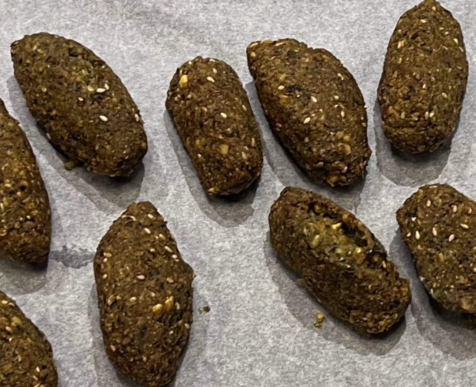
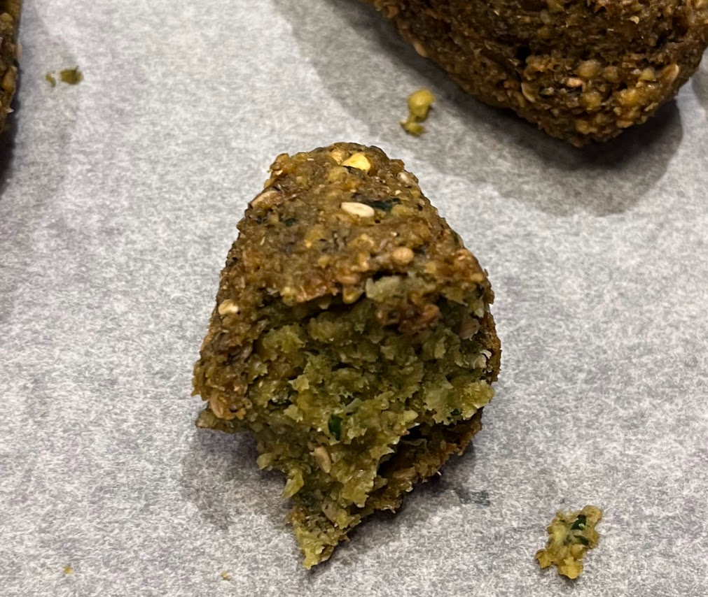
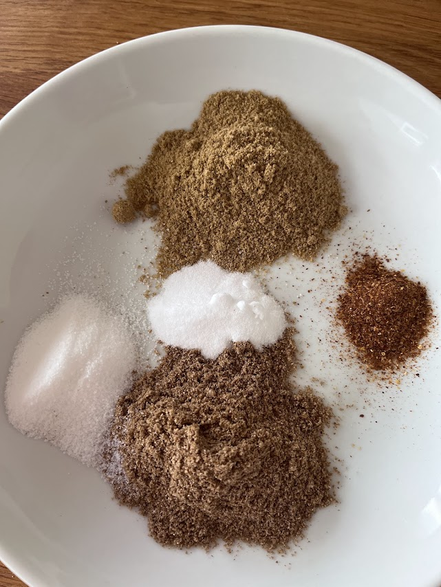

Falafels libanais
⏱️ 60 min + 24 h de trempage
🔥 Moyen
👥 Environ 50 falafels



Étapes
- La veille, faites tremper les pois chiches dans un grand volume d'eau froide pendant 24 heures.
- Égouttez-les soigneusement puis séchez-les parfaitement dans un torchon propre ou du papier absorbant. Cette étape est essentielle pour obtenir des falafels qui ne se délitent pas à la cuisson.
- Placez les pois chiches réhydratés dans un mixeur.
- Mixez par impulsions jusqu'à obtenir une pâte granuleuse qui s'agglomère lorsqu'on la tasse. Ne cherchez pas à obtenir une purée lisse.
- Versez la préparation dans un saladier et ajoutez le cumin, la coriandre en poudre, le piment, le bicarbonate, le sel et le poivre.
- Hachez très finement le persil, la coriandre fraîche et l'ail.
- Ajoutez les herbes et l'ail à la préparation.
- Incorporez les graines de sésame dorées puis mélangez soigneusement.
- Goûtez la préparation et rectifiez l'assaisonnement si nécessaire.
- Formez des boulettes ou utilisez une cuillère spéciale à falafels.
- Faites chauffer un bain d'huile puis plongez les falafels un à un dans l'huile bien chaude.
- Faites-les frire jusqu'à obtenir une belle couleur brun doré.
- Égouttez-les sur du papier absorbant.
- Servez chauds avec du houmousS, du pain pita, une sauce au yaourt ou une salade.
Conseils de Gigi
N'utilisez jamais de pois chiches en conserve. Les falafels traditionnels sont préparés avec des pois chiches secs réhydratés, ce qui garantit une texture parfaite.
Les herbes fraîches doivent être parfaitement sèches avant d'être ajoutées à la préparation afin d'éviter qu'elle ne contienne trop d'humidité.
Conservation
Les falafels se congèlent très bien. Pour les réchauffer, passez-les environ 10 minutes dans un four bien chaud afin qu'ils retrouvent tout leur croustillant.